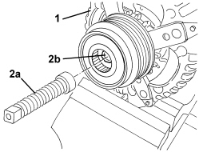
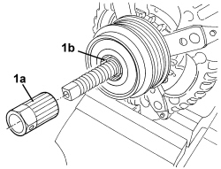
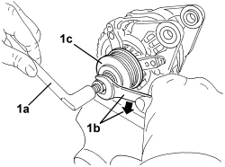

5530A30 ALTERNATOR PULLEY OR FAN - R+R WITH ALTERNATOR REMOVED
- Path
- Procedures > 55 ELECTRICAL EQUIPMENT > 5530 CURRENT GENERATION > 5530A ALTERNATOR AND COMPONENTS > 5530A30 ALTERNATOR PULLEY OR FAN - R+R WITH ALTERNATOR REMOVED
- Kind
- repair procedure (removal / refitting; the operation number is the code)
- Applies to
- engines: 2.4 JTD 20v; all production periods
- Interactive page
- https://sloeber94.github.io/elrnDB-aBrrSpdr/en/#/946003398
Applies to: engines: 2.4 JTD 20v; all production periods
 Removing
Removing
 Refitting
Refitting1. Place the alternator in the vice as illustrated in the diagram.
2. Position the tool (2a) fitted with a hexagonal recess in the hexagonal socket (2b).
Tool | Description | Function | Validity |
|---|---|---|---|
2000013800 | Tool with hexagonal reference | Extracting alternator pulley |

Applies to: engines: 2.4 JTD 20v; all production periods
1. Fit the ribbed bush tool (1a) in the housing (1b).
Tool | Description | Function | Validity |
|---|---|---|---|
1870785000 | Multi-tooth spanner | Removing/refitting alternator pulley |

Applies to: engines: 2.4 JTD 20v; all production periods
1. Using the counter-torque tool (1a) and a spanner (1b), loosen the pulley (1c) (left hand thread).
Tool | Description | Function | Validity |
|---|---|---|---|
1854014000 | Reaction spanner | Extracting alternator pulley |

Applies to: engines: 2.4 JTD 20v; all production periods
Refitting
Removing- Check that the pulley is not damaged.
- Tighten the pulley in place (left hand thread).
1. Using the tools (1a), (1b), (1c) and a torque wrench (1d), tighten the pulley (1e) to the recommended torque.
1a | Tool with hexagonal recess | 2000013800 |
1b | Multi-tooth spanner | 1870785000 |
1c | Reaction spanner | 1854014000 |
Component | Fastening | dia | Value (daNm) | Validity |
|---|---|---|---|---|
ALTERNATOR PULLEY | - | - | 0.85 |